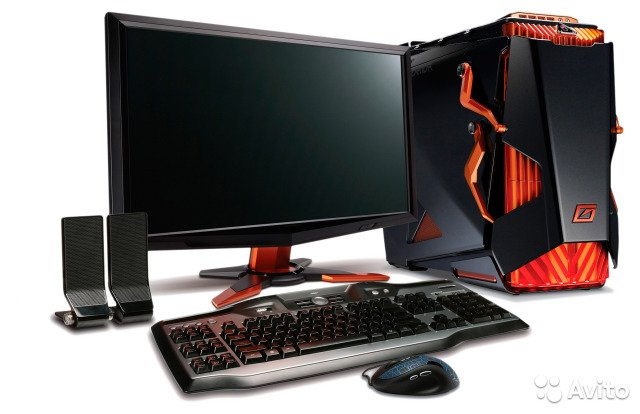

Персональный компьютер (википедия)
Персона́льный компью́тер, ПК (англ. personal computer, PC), ПЭВМ (персональная электронно-вычислительная машина) — однопользовательская (предназначенная для использования одним пользователем) ЭВМ, имеющая эксплуатационные характеристики бытового прибора и универсальные функциональные возможности. ПК может быть стационарным (чаще всего настольным) или переносным (лептоп, планшет).
Согласно ГОСТ 27201-87, ПК применяются как средства массовой автоматизации (в основном для создания на их основе автоматизированных рабочих мест) в социальной и производственных сферах деятельности в различных областях народного хозяйства и предназначенные для пользователей, не обладающих специальными знаниями в области вычислительной техники и программирования.

Изначально компьютер был создан как вычислительная машина, но ПК также используется в других целях — как средство доступа в информационные сети и как платформа для мультимедиа (мультимедиастанция), и компьютерных игр (игровой ПК), и персональная рабочая станция.
 Продолжение
Продолжение